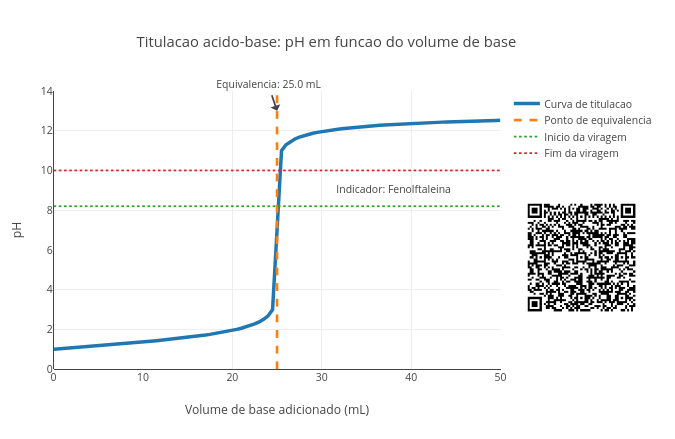
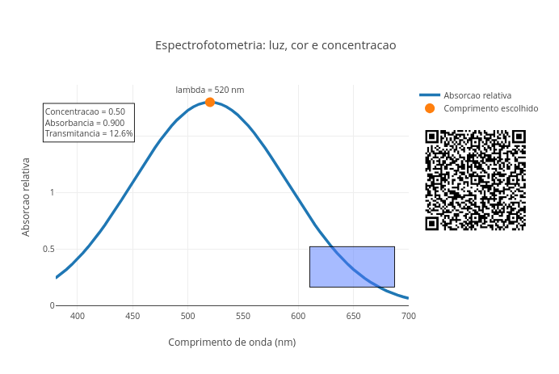
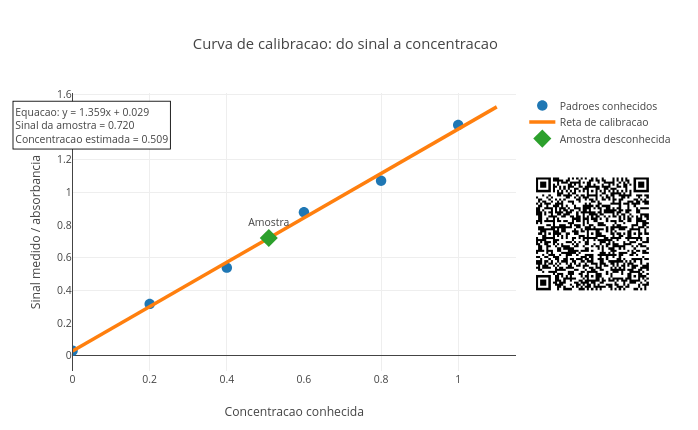
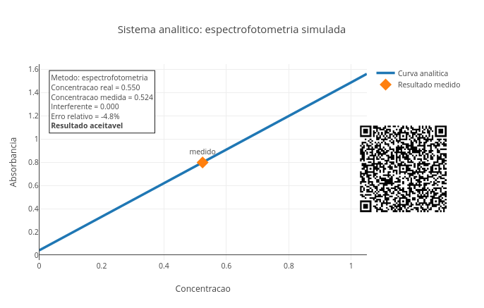
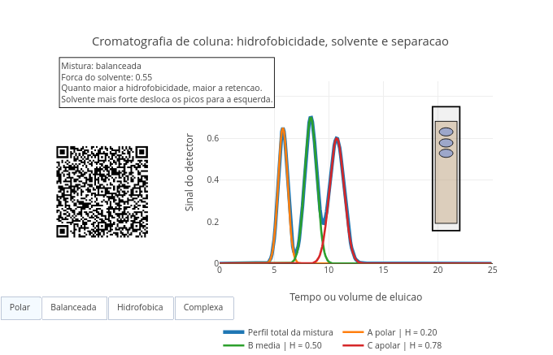
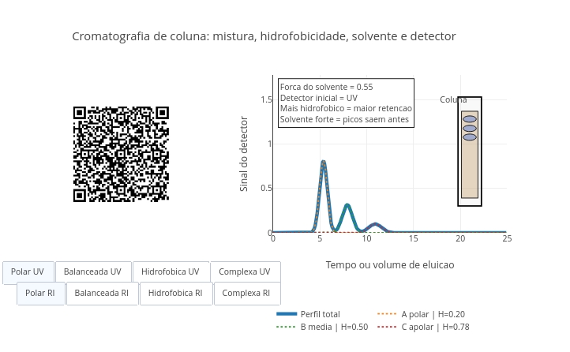
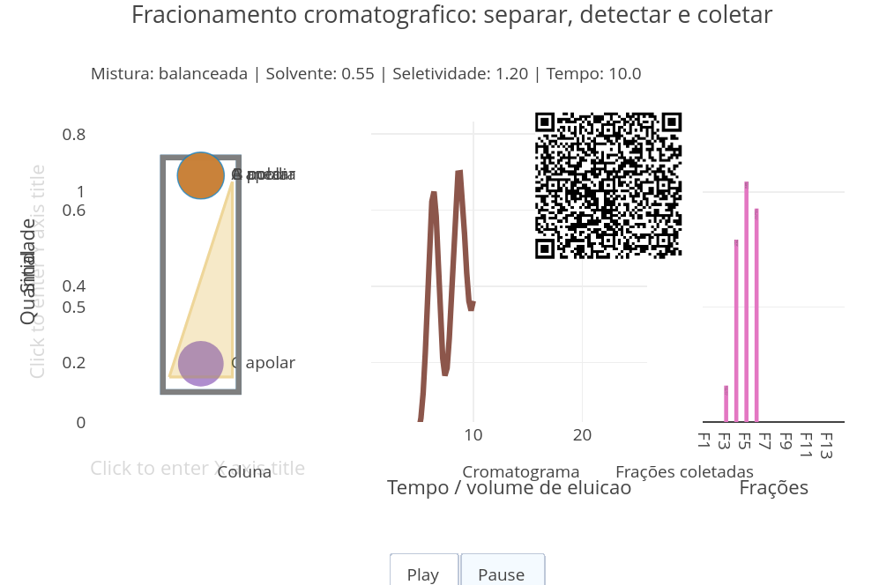

8 Química Analítica
Você já reparou que muitas das coisas do mundo não podem ser vistas diretamente ? Por exemplo, uma água aparentemente limpa não significa que seja realmente potável. E um suco de laranja comercial pode não conter o valor de vitamina C informado pelo fabricante. Por outro lado, um impacto ambiental pode requerer que se determine o teor de um poluente invisível com precisão. Nessas situações, é importante usar alguma técnica que permita verificar certas propriedades da amostra em análise.
Isso normalmente acompanha uma medida na amostra, sua adequação a um modelo teórico, a calibração do valor junto ao equipamento de medida, e a interpretação do resultado. É assim no cotidiano das empresas de abastecimento de água para medição do teor de cloro, na indústria de alimentos para aferição da acidez e concentração de substâncias, para se medir o teor de glicose do sangue numa farmácia, bem como o de poluentes em amostras para monitoramento de impacto ambiental.
Nesse sentido, este capítulo lida com algo bastante prático da Química: como analisar e quantificar soluções e compostos de interesse (analitos), transformando sinais químicos em informação confiável. Agora buscamos responder “o que existe” (análise qualitativa) e o “quanto existe” (análise quantitativa) de uma substância numaamostra .

Depois de explorar, você consegue:
- compreender a diferença entre análise qualitativa e quantitativa;
- interpretar uma titulação como uma reação monitorada;
- relacionar absorbância, luz e concentração em espectrofotometria;
- construir e interpretar curvas de calibração;
- reconhecer erros, incertezas e limitações de uma medida;
- usar gráficos interativos baseados em códigos para investigar amostras simuladas.Imagine que uma água pareça limpa, embora contenha contaminantes. Ou que uma agência nacional confie no teor de lactose, colesterol, ou açúcar informado pelo fabricante no rótulo do produto. Ou ainda que uma solução pareça mais azul que outra, comparando-as apenas visualmente. Em todos esses casos, é necessário sair da impressão visual e chegar a uma medida. Para isso utilizam-se alguns métodos da Química, e dentre os mais famosos, a titulometria, apresentada pela Figura 8.2 como um JSPlotly para investigação simulada.
Titulometria

O script de JSPlotly da Figura 8.2 simula uma titulação ácido-base, procedimento que ajuda a encontrar a quantidade de um composto por mudança de cor da solução. Você acompanha como o pH muda quando uma base é adicionada pouco a pouco a uma solução ácida. O gráfico mostra a curva de titulação, o ponto de equivalência, e a faixa de viragem do indicador.
Agite antes de usar
A curva mostra que o pH muda lentamente no início. Perto da equivalência, isto é, quando a quantidade de base adicionada é igual à de ácido, uma pequena adição de titulante causa um grande salto de pH. Após esse ponto, o pH passa a ser dominado pelo excesso de base. As linhas horizontais indicam a faixa de viragem do indicador.
Execute o script com:
const Ca = 0.10;
const Cb = 0.10;
const Va = 25;
const indicador = "fenolftaleina";Depois teste outros indicadores, como o “azul_bromotimol” e o “alaranjado_metila”.
Também altere as concentrações, e observe como o volume de equivalência muda.
```js
const Ca = 0.20;
const Cb = 0.10;Como a titulação ajuda a predizer quanto de ácido havia na solução inicial ?
Durante a titulação, a base neutraliza o ácido. No ponto de equivalência, o teor de ácido e base se iguala, considerando a proporção da reação (estequiometria).
Neste caso simples:
\[ n_H = n_{OH} \tag{8.1}\]
Com \(n\) representando o número de mols. Como:
\[ n = C \cdot V \tag{8.2}\]
O volume de equivalência permite calcular a concentração ou quantidade da substância analisada. Segue um modo de usar para o aplicativo.
- Rode o script com os valores originais;
- Observe a curva de pH;
- Localize o ponto de equivalência;
- Veja se a faixa do indicador passa perto da região de salto da curva;
- Troque o indicador;
- Compare as faixas de viragem;
- Aumente a concentração do ácido;
- Veja se o volume de equivalência aumenta;
- Aumente a concentração da base;
- Veja se o volume de equivalência diminui.
Perceba que um bom indicador é aquele que muda de cor perto do ponto certo. Seguem alguns contextos para uma experiência “titulável”.
- Titulação equilibrada. Por que o ponto de equivalência aparece próximo de 25 mL ?
const Ca = 0.10;
const Cb = 0.10;
const Va = 25;- Ácido mais concentrado. Por que é necessário mais base para neutralizar o ácido ?
const Ca = 0.20;
const Cb = 0.10;- Base mais concentrada. Por que o volume de equivalência diminui ?
const Ca = 0.10;
const Cb = 0.20;- Fenolftaleína. A viragem ocorre próxima do salto de pH ?
const indicador = "fenolftaleina";- Azul de bromotimol. Por que esse indicador combina bem com equivalência próxima de pH 7 ?
const indicador = "azul_bromotimol";- Alaranjado de metila. Em que tipo de titulação esse indicador poderia ser mais adequado ?
const indicador = "alaranjado_metila";Existem alguns tipos diferentes de titulação também, como a titulação complexométrica, a titulação redox, e a titulação por precipitação. Em comum a elas, está o fato de que são técnicas que permitem descobrir a quantidade de uma substância observando como ela reage com outra de concentração conhecida.
Por dentro do script
O script começa definindo os parâmetros principais:
const Ca = 0.10;
const Cb = 0.10;
const Va = 25;
const indicador = "fenolftaleina";Depois simula a adição de base:
for (let vb = 0; vb <= 50; vb += 0.5)Para cada volume, calcula os mols de ácido e base:
const molH = Ca * Va / 1000;
const molOH = Cb * vb / 1000;Se ainda há excesso de ácido, calcula-se o pH pelo excesso de H\(^+\). Se há excesso de base, calcula-se o pH pelo excesso de OH\(^-\). Então o ponto de equivalência é calculado por:
const Veq = (Ca * Va) / Cb;Por fim, o script desenha a faixa de viragem do indicador escolhido.
Espectrofotometria
Reações de titulação dependem normalmente do olhar do observador para perceber o ponto de viragem correto. É claro que existem máquinas capazes de identificá-lo com precisão, mas são caras e pouco disponíveis em instituições de ensino básico e mesmo superior. Além disso, mesmo essas máquinas se baseiam em algum princípio quantitativo, como uma mudança de pH, um sinal elétrico, ou a intensidade de uma cor. Assim, uma técnica que dependa do olhar humano para detectar o ponto exato da mudança de uma cor pode ser substituida por outra que a quantifique. É disso que se trata o próximo JSPlotly: mostrar que uma “cor” pode virar medida química, revelando a concentração do composto.

A espectrofotometria é uma técnica de laboratório que mede a quantidade de luz absorvida por uma substância química. Basicamente, um feixe de luz atravessa uma amostra e o equipamento calcula a intensidade da luz que passa. Como cada molécula absorve cores ou comprimentos de onda específicos, essa medição permite identificar o que há na amostra e determinar sua concentração exata.
O app da Figura 8.3 simula uma análise espectrofotométrica. A ideia é observar como uma substância absorve luz em diferentes comprimentos de onda. O gráfico mostra o espectro de absorção do composto, o comprimento de onda escolhido, a absorbância do composto (quanto de luz é absorvida pela interação com a molécula), bem como sua transmitância (quanto de luz atravessa a solução sem interagir com a molécula). A intensidade da cor é representada visualmente.
Execute o script com:
const concentracao = 0.50;
const lambda = 520;
const epsilonMax = 1.8;
const caminho = 1.0;Depois altere a concentração:
const concentracao = 0.10;
const concentracao = 0.80;E teste outros comprimentos de onda, e observe como a absorbância muda:
const lambda = 400;
const lambda = 520;
const lambda = 650;Na espectrofotometria, como descobrir a concentração de uma solução usando luz ?
Na espectrofotometria, uma luz atravessa a amostra. Parte da luz passa (transmitida) e parte é absorvida (absorção), e a relação quantitativa entre as duas é dada por:
\[ A=-\log _{10}T \tag{8.3}\]
Já a relação entre absorção e concentração é descrita pela Lei de Beer-Lambert:
\[ A = \varepsilon \cdot b \cdot c \]
Onde:
- \(A\) é a absorbância;
- \(\varepsilon\) é um coeficiente de absorção (ou de
extinção) da substância, e que depende do comprimento de onda da faixa de luz escolhida (\(\lambda\), ou lambda, em nm), indicando a capacidade da substância em absorver luz naquela faixa; - \(b\) é o
caminho óptico, a espessura do frasco que contém a amostra que é lida pelo equipamento; - \(c\) é a concentração da substância.
Assim, medir luz pode revelar quantidade de matéria. Segue um pequeno tutorial de uso:
- Rode o script com os valores originais;
- Observe o pico de absorção;
- Veja onde está o comprimento de onda escolhido;
- Altere
lambda; - Observe se o ponto se aproxima ou se afasta do máximo;
- Aumente
concentracao; - Veja a absorbância aumentar;
- Observe a transmitância diminuir;
- Altere
caminho; - Veja como o percurso da luz também afeta a medida.
A melhor medida ocorre em qualquer “cor de luz” ou perto do máximo de absorção ? Seguem também alguns contextos para você experimentar.
- Medida no máximo de absorção. Por que medir no pico melhora a sensibilidade da análise ?
const lambda = 520;- Medida longe do pico. Por que a absorbância diminui quando a luz escolhida é pouco absorvida ?
const lambda = 650;- Solução diluída. Por que soluções diluídas deixam passar mais luz ?
const concentracao = 0.10;Solução concentrada. Agora passe a
concentracaopara 0.90. Por que soluções mais concentradas reduzem a transmitância ?Caminho óptico maior. Por que a luz sofre maior absorção quando atravessa um caminho maior de solução ?
const caminho = 2.0;- Molécula mais absorvente. Como uma substância com maior absorção molar altera a sensibilidade da análise ?
const epsilonMax = 3.0;O gráfico mostra que a substância não absorve todas as cores igualmente. Existe uma região em que a absorção é maior e medir próximo dessa região torna a análise mais sensível. A absorbância aumenta quando a concentração e/ou o caminho óptico aumentam. Nessa situação, a substância absorve mais naquele comprimento de onda. Em suma, a cor da solução pode esconder uma medida quantitativa.
Por dentro do script
O script começa com os parâmetros principais:
const concentracao = 0.50;
const lambda = 520;
const epsilonMax = 1.8;
const caminho = 1.0;Depois define um modelo simplificado para uma função de absorção relativa:
function absorcaoRelativa(lam) {...}Essa função cria um pico de absorção em torno de 520 nm:
const centro = 520;
const largura = 70;Em seguida, o script calcula o espectro:
espectro.push(epsilonMax * absorcaoRelativa(l));Para o comprimento de onda escolhido, calcula:
const epsilonAtual = epsilonMax * absorcaoRelativa(lambda);A absorbância vem de:
const absorbancia = epsilonAtual * caminho * concentracao;E a transmitância é calculada por:
const transmitancia = Math.pow(10, -absorbancia) * 100;Assim, o script transforma luz absorvida em informação quantitativa.
Independentemente do uso de uma titulação ou de um espectrofotômetro, a conversão do sinal observado em concentração, como o ponto de equivalência para a primeira técnica e a medida de absorção molecular para a segunda, depende de uma curva de calibração. Sendo bem sincero, qualquer medida analítica depende de uma referência confiável, e a curva de calibração é o procedimento para se obtê-la. Só é possível confiar num resultado preciso do teor de um analito calibrando-se o método usado para obtê-lo, já que o procedimento associa um sinal abstrato do equipamento (absorbância) a um valor do mundo real, como a concentração.
Esse é coração do próximo JSPlotly da Figura 8.4, a simulação de uma curva de calibração, quando o sinal passa a virar concentração.

O script simula uma curva de calibração. A ideia é comparar padrões de concentração conhecida com seus sinais medidos. Depois, usando uma reta teórica ajustada aos pontos experimentais, estima-se a concentração de uma amostra desconhecida.
Agite antes de usar
No app, os pontos representam padrões conhecidos. A reta representa o modelo de calibração. O diamante representa a amostra desconhecida.
Execute o script com:
const erro = 0.04;
const sinalAmostra = 0.72;
const inclinacaoReal = 1.35;
const interceptoReal = 0.03;Depois altere o sinal da amostra:
const sinalAmostra = 0.40;
const sinalAmostra = 1.10;E teste diferentes níveis de erro, observando como a estimativa muda.
const erro = 0.01;
const erro = 0.10;Como descobrir a concentração de uma amostra que não se conhece ?
Primeiro, medimos padrões conhecidos. Depois ajustamos uma reta:
\[ y = ax + b \tag{8.4}\]
Onde:
- \(y\) é o sinal medido;
- \(x\) é a concentração;
- \(a\) é a inclinação da reta;
- \(b\) é o intercepto da reta no eixo y.
Essa reta é puramente teórica e busca mostrar a tendência de comportamento entre a variável independente \(x\) e sua variável resposta \(y\). Esse ajuste é feito por um procedimento que revela qual a reta que mostra a menor distância entre os pontos experimentais e os previstos teoricamente (Método dos Mínimos Quadrados). Esse procedimento é bastante conhecido nas Ciências como um todo, e denominado por regressão linear ou ajuste linear. Ou seja, uma aproximação que permite predizer o comportamento esperado a partir dos dados, quando há uma relação de proporcionalidade direta entre ambos. Ou mais curtinho ainda, um modelo de predição a partir do que é observado.
Continuando no script, para uma amostra desconhecida, fazemos o caminho inverso:
\[ x = \frac{y-b}{a} \tag{8.5}\]
Assim, o sinal medido se transforma em concentração estimada. Abaixo um tutorial rápido para uso do app.
- Rode o script;
- Observe os pontos dos padrões conhecidos;
- Veja a reta de calibração;
- Localize a amostra desconhecida;
- Leia a concentração estimada;
- Altere
sinalAmostra; - Veja o ponto da amostra se mover;
- Aumente
erro; - Observe se os pontos ficam menos alinhados;
- Compare estimativas com erro baixo e erro alto.
Exercitando-se acima, perceba que uma curva de calibração confiável depende da reta, dos pontos e do controle do erro. Seguem alguns cenários para você explorar.
- Baixo erro experimental. Pontos mais alinhados tornam a estimativa mais confiável ?
const erro = 0.005;- Erro maior. Como a dispersão dos pontos afeta a confiança na concentração estimada ?
const erro = 0.12;- Amostra diluída. Por que sinais menores indicam menor concentração ?
const sinalAmostra = 0.25;- Amostra concentrada. A amostra ainda está dentro da faixa dos padrões ?
const sinalAmostra = 1.20;- Maior sensibilidade. Uma reta mais inclinada torna o método mais sensível ?
const inclinacaoReal = 2.00;- Intercepto diferente de zero. O que significa haver sinal mesmo quando a concentração é zero ?
const interceptoReal = 0.20;Observe que, se a amostra cai dentro da faixa dos padrões, a estimativa é uma interpolação. Se cai fora, vira extrapolação. E a confiança diminui. Portanto, a medição nada mais é do que transformar um sinal em informação confiável.
Traduzindo tudo isso num esquema:
\[ amostra \rightarrow sinal \rightarrow medida \rightarrow modelo \rightarrow concentração \rightarrow decisão \tag{8.6}\]
Por dentro do script
O script começa definindo parâmetros do “experimento”:
const erro = 0.04;
const sinalAmostra = 0.72;
const inclinacaoReal = 1.35;
const interceptoReal = 0.03;Depois cria padrões conhecidos:
const conc = [0, 0.2, 0.4, 0.6, 0.8, 1.0];Cada padrão gera um sinal com pequena variação experimental:
const ruido = erro * Math.sin(i * 2.7);
return interceptoReal + inclinacaoReal * c + ruido;Em seguida, o script calcula a reta de calibração por ajuste linear:
const a = (n * sxy - sx * sy) / (n * sxx - sx * sx);
const b = (sy - a * sx) / n;Por fim, estima a concentração da amostra:
const concAmostra = (sinalAmostra - b) / a;Esse é o passo essencial da análise quantitativa.
Nas seções acima você acompanhou duas das principais técnicas na análise Química, e viu também como calibrar um instrumento para obter medidas com precisão. A questão que sucede agora é saber se, ainda que tenha obtido medidas precisas, se essas medidas são confiáveis (acurácia). Isso é conduzido com outros procedimentos, normalmente do campo da Estatística, e espelhados no JSPlotly da Figura 8.5, tais como medida, erro e confiança no resultado.

Depois de explorar titulação, espectrofotometria e curva de calibração, esse app agora mostra que todo resultado analítico precisa ser interpretado. Além de “medir concentração” com precisão, é importante saber se essa medida tem acurácia, ou seja, se essa “concentração é confiável”.
Essa diferença entre precisão e acurácia é visualmente simples. Pense num arco e flecha e um alvo. Precisão é acertar uma flecha algumas vezes lado a lado em qualquer lugar do alvo, enquanto que acurácia é acertá-la no centro do alvo.
Agite antes de usar
O script simula um sistema analítico com titulação ou espectrofotometria. Em cada caso, há uma concentração real e uma concentração medida. O gráfico mostra uma curva associada ao método escolhido. O ponto em destaque representa o resultado medido. A caixa de texto contém várias informações do “experimento”:
- método;
- concentração real;
- concentração medida;
- interferente;
- erro relativo;
- avaliação final.
A diferença entre elas gera um erro relativo que classifica o resultado como aceitável, duvidoso, ou ruim.
Execute o script com:
const metodo = "espectro";
const concentracaoReal = 0.55;
const erroPercentual = 5;
const interferente = 0.00;Depois teste:
const metodo = "titulacao";Agora aumente o erro:
const erroPercentual = 15;
const erroPercentual = 30;E simule interferência, como um composto que também é titulado ou absorvido junto no experimento, camuflando o valor real do analito que se deseja determinar:
const interferente = 0.10;
const interferente = -0.10;Observe como a avaliação muda.
Quando uma medida deve ser aceita, questionada ou rejeitada ?
Para qualquer medida experimental, quer em Química, Física, Biologia ou qualquer outra área do Conhecimento, o valor medido pode ser afetado de diferentes maneiras:
- erro experimental;
- interferentes;
- limitações do método;
- leitura do instrumento;
- escolha inadequada da técnica.
Por isso, dois resultados podem parecer próximos, mas ter confiabilidades diferentes. Para verificar isso, use o app como segue:
- Rode o script em modo
"espectro"; - Observe a curva analítica;
- Veja a concentração real e a concentração medida;
- Observe o erro relativo;
- Aumente
erroPercentual; - Veja quando o resultado deixa de ser aceitável;
- Aumente
interferente; - Observe se a medida fica superestimada;
- Use interferente negativo;
- Observe se a medida fica subestimada;
- Troque para
"titulacao"; - Compare como o mesmo conceito aparece nesse outro método.
Depois de rodar o script algumas vezes, perceba que um resultado numérico precisa ser acompanhado de sua qualidade. Alguns cenários para você “validar”…ou não !
- Medida quase ideal. Por que o resultado fica próximo do valor real ?
const erroPercentual = 1;
const interferente = 0.00;- Erro moderado. Em que momento o resultado começa a ficar duvidoso ?
const erroPercentual = 12;Erro grande. Troque agora o erro para 30. Por que um erro elevado pode comprometer completamente a interpretação ?
Interferente positivo. O que acontece quando outra substância aumenta o sinal medido ?
const interferente = 0.15;- Interferente negativo. Como uma interferência pode fazer a concentração parecer menor do que realmente é ? .
const interferente = -0.10;- Comparação entre métodos. O erro aparece do mesmo jeito em métodos diferentes ?
const metodo = "titulacao";depois:
const metodo = "espectro";Em laboratórios do mundo, erros e interferentes aparecem em análises de água, alimentos, medicamentos, sangue, solo e poluentes, para citar apenas alguns. Um resultado errado pode levar a decisões erradas, como aprovar uma água imprópria, reprovar um alimento seguro (ou vice-versa), dosar mal um medicamento, diagnosticar erroneamente um paciente, ou subestimar uma contaminação. Por isso, a análise em Química, assim como em outras áreas, exige controle, calibração, repetição e interpretação crítica.
Por dentro do script
O script começa definindo o método e a concentração real:
const metodo = "espectro";
const concentracaoReal = 0.55;Depois cria uma concentração medida com erro:
const erroFator = 1 + erroPercentual / 100 * Math.sin(concentracaoReal * 9.1);
const concentracaoMedida = concentracaoReal * erroFator + interferente;Isso simula a diferença entre o valor verdadeiro e o valor obtido no laboratório. Quando o método é a titulação, o script gera uma curva de pH:
if (metodo === "titulacao") {...}Quando o método é a espectrofotometria, gera uma curva analítica:
else {
y.push(1.45 * c + 0.04);
}Depois calcula o erro relativo:
const erroRelativo = 100 * diferenca / concentracaoReal;E classifica o resultado:
if (Math.abs(erroRelativo) > 10) avaliacao = "Resultado duvidoso";
if (Math.abs(erroRelativo) > 20) avaliacao = "Resultado ruim";Assim, o script combina medida, erro e julgamento analítico.
Cromatografia
Um outro método muito comum em laboratórios de maior porte é a cromatografia. Na verdade, ela pode ser realizada até em papel, mas para medidas precisas, em que se deseja a detecção e quantificação de uma substância de interesse no meio de uma mistura, a cromatografia em coluna é preferível. Entre os diversos métodos cromatográficos em coluna destacam-se a cromatografia de filtração molecular, a cromatografia de troca iônica, a cromatografia gasosa, a cromatografia de fase reversa, e a cromatografia de afinidade.
Seja qual for a escolha, os métodos cromatográficos são empregados desde a universidade até a indútria, quando se deseja rastrear e quantificar uma substância numa mistura. Essa mistura pode ser sangue, urina, extratos celulares, leite, ou qualquer outra fonte do composto sob investigação, o que faz com que o método seja utilizado desde laboratórios universitários até análise forense.
Assim, não poderíamos deixar de dar um passeio, ainda que discreto, num JSPlotly voltado ao emprego da cromatografia, como na Figura 8.6 abaixo.

O app coloca você como um “detetive químico” a explorar separação, identificação e interpretação de misturas apresentadas em forma de gráfico. Assim, ele simula cromatografia de coluna com solvente, hidrofobicidade, ruído e composição da mistura. A ideia é separar componentes de uma mistura com base em suas interações com a coluna e com o solvente.
O gráfico tem várias informações. Ele mostra os picos individuais dos analitos, o perfil total da mistura, o efeito da força do solvente, a influência da hidrofobicidade e uma representação visual da coluna.
Agite antes de usar
Cada pico do gráfico representa um componente da mistura. A posição do pico indica quando ele saiu da coluna. A altura do pico está relacionada à quantidade relativa do analito. O perfil total mostra o que o detector enxergaria ao final.
Execute o script com:
const solvente = 0.55;
const ruidoLigado = false;
const mostrarColuna = true;
const mistura = "balanceada";Depois teste:
const mistura = "polar";
const mistura = "hidrofobica";
const mistura = "complexa";Agora altere a força do solvente:
const solvente = 0.25;
const solvente = 0.85;Observe como os picos se deslocam.
Como separar substâncias que estão misturadas na mesma amostra ?
Na cromatografia, cada componente interage de forma diferente com a fase estacionária (uma resina) e com a fase móvel (a passagem do solvente). O modelo da Figura 8.6 apresenta uma cromatografia de separação por hidrofobicidade. Nessa, os compostos mais hidrofóbicos interagem mais fortemente com a coluna e ficam mais retidos. Para retirá-los da coluna, usam-se solventes mais fortes (deslocamento mais cedo dos picos). Ao final, o cromatograma revela a composição da mistura. A adição de ruído no modelo é feita para dificultar intencionalmente a interpretação. Isso não é para te provocar dor-de-cabeça, mas para aproximar a simulação de um experimento do mundo real. Segue um tutorial de uso do app.
- Rode o script com a mistura
"balanceada"; - Observe o perfil total;
- Compare os picos individuais;
- Veja quais analitos saem primeiro;
- Reduza
solvente; - Observe os picos deslocarem para a direita;
- Aumente
solvente; - Observe os picos deslocarem para a esquerda;
- Troque para mistura
"complexa"; - Veja se os picos ficam mais difíceis de separar;
- Ligue o ruído;
- Observe como a leitura fica menos limpa.
Exercitando-se acima, observe que uma boa separação depende da mistura, da coluna e do solvente. Abaixo vão alguns cenários cinematográficos…digo, “cromatográficos”.
- Mistura polar. Por que compostos mais polares tendem a sair mais cedo neste modelo ?
const mistura = "polar";- Mistura hidrofóbica. Por que compostos hidrofóbicos ficam mais retidos ?
const mistura = "hidrofobica";- Mistura complexa. O que acontece quando muitos analitos possuem retenções próximas ?
const mistura = "complexa";- Solvente fraco. Por que os picos demoram mais para aparecer ?
const solvente = 0.25;- Solvente forte. Por que os picos saem mais cedo, mas podem ficar menos separados ?
const solvente = 0.90;- Com ruído. Como o ruído dificulta identificar picos pequenos ?
const ruidoLigado = true;- Sem coluna visual. O gráfico sozinho é suficiente para interpretar a separação ?
const mostrarColuna = false;Veja também que, enquanto picos bem separados tornam a análise mais clara, a sobreposição deles dificulta a interpretação.
Por dentro do script
O script começa definindo os controles principais:
const solvente = 0.55;
const ruidoLigado = false;
const mostrarColuna = true;
const mistura = "balanceada";Depois define diferentes tipos de mistura:
const misturas = {
polar: [...],
balanceada: [...],
hidrofobica: [...],
complexa: [...]
};Cada analito possui um nome, uma quantidade e um grau de hidrofobicidade. Os picos são gerados com uma função gaussiana (curva de sino, comum na Estatística, para a distribuição normal):
function gauss(x, mu, sigma, amp)O tempo de retenção depende da hidrofobicidade e da força do solvente:
const k = 1 + 9 * a.hidro * (1 - solvente);
const tr = 2 + k * 2.1;Quanto maior a hidrofobicidade e mais fraco o solvente, maior o tempo de retenção. O perfil total é dado pela soma dos picos individuais.
Esse é o princípio visual de um cromatograma.
Detectores cromatográficos
Até agora você viu que a cromatografia é um processo de separação baseado nas características da molécula e do solvente. Mas… e se a molécula possuir características que permita ser identificada de jeitos diferentes ? Esse é o alvo do próximo JSPlotly (Figura 8.7), prover dois detectores distintos para informações também distintas do analito. A ideia agora é mostrar que o que você enxerga depende do tipo de detector.

O app simula uma cromatografia de coluna “completa”. Isso inclui: - diferentes misturas; - efeito do solvente; - hidrofobicidade; - ruído experimental; - dois detectores distintos: UV (luz ultravioleta) e RI (refração da luz).
A presença de dois detectores para propriedades distintas mostra que uma mesma mistura pode parecer diferente dependendo de como você observa. O gráfico mostra o perfil total da mistura, os picos individuais e o efeito do detector na intensidade dos sinais.
Agite antes de usar
Execute o script com:
const solvente = 0.55;
const misturaInicial = "balanceada";
const detectorInicial = "uv";Depois use os botões:
- Polar UV
- Balanceada UV
- Hidrofóbica UV
- Complexa UV
Agora troque para:
- Polar RI
- Balanceada RI
- Hidrofóbica RI
- Complexa RI
Compare os perfis.
Ative também:
const ruidoLigado = true;O que realmente existe na amostra e o que o detector consegue enxergar ?
Na prática, o detector UV responde a moléculas que absorvem luz na faixa de onda ultravioleta, enquanto que o detector RI responde a mudanças no índice de refração da amostra. Dessa forma, diferentes substâncias geram respostas diferentes em cada detector. Isso significa que uma substância desejada pode até estar presente na amostra, mas praticamente invisível para determinado tipo de detector.
Por dentro do script
O script começa definindo os parâmetros principais:
const solvente = 0.55;
const misturaInicial = "balanceada";
const detectorInicial = "uv";Cada analito possui propriedades duplas:
uv: 0.50,
ri: 0.90Ou seja, a mesma substância responde diferente em cada detector. O sinal é calculado por:
const amp = analito.qtd * resposta;Onde resposta depende do detector. Os picos são gerados como funções gaussianas:
gauss(t, tr, largura, amp)Depois, o script cria diferentes “estados”, e permite alternar entre eles com botões.:
estados[mistura + "_" + detector]Isso simula trocar o detector no laboratório sem mudar a amostra. Seguem instruções rápidas para uso do aplicativo.
- Rode o script;
- Observe o perfil total;
- Identifique os picos individuais;
- Troque de UV para RI;
- Compare a altura dos picos;
- Veja quais compostos “desaparecem” ou ganham destaque;
- Mude a mistura;
- Observe a complexidade aumentar;
- Aumente o solvente;
- Veja os picos deslocarem;
- Ative o ruído;
- Observe a dificuldade de interpretação.
Perceba que um detector não mostra tudo, mas apenas parte da realidade. Seguem alguns cenários “detectáveis”.
- Mesmo sistema, detector diferente. Por que o mesmo analito muda de intensidade ?
UV:
detectorInicial = "uv";RI:
detectorInicial = "ri";- Mistura complexa. Qual detector separa melhor os componentes ?
const misturaInicial = "complexa";- Solvente fraco. Por que os picos ficam mais espaçados ?
const solvente = 0.25;- Solvente forte. Por que os picos se comprimem e podem se sobrepor ?
const solvente = 0.90;- Ruído experimental. Como distinguir sinal real de ruído ?
const ruidoLigado = true;- Invisibilidade analítica. Observe um analito com resposta baixa em UV. Ele desaparece ou só não está sendo detectado ?
Cada pico representa um componente da mistura. Mas sua altura depende do detector. Isso significa que uma mesma concentração pode apresentar sinais diferentes. E também quer dizer que numa mesma mistura os gráficos podem apresentar-se diferentes. Ou seja, uma mesma realidade pode ter interpretações diferentes. Tudo depende de como você mede, com o que você mede, e o que você escolhe observar.
Antes de “taxiarmos” a pista de vôo espacial para divagações múltiplas do capítulo, segue um último JSPlotly, dessa vez pra (quase) relaxar ! Uma animação que pretende juntar o que você aprendeu ao longo do tema, bem como para simular um fracionamento cromatográfico tendo você como o pesquisador que opera a coluna. Agora você vai separar, observar e coletar.

Agite antes de usar
Imagine que você tem uma mistura complexa contendo vários compostos juntos e invisíveis entre si. Como separar ? Na prática, você não “vê” as moléculas mas observa como elas se movem em um sistema. A mistura entrando na coluna, as bandas se separando, o sinal surgindo no detector e, finalmente, os compostos sendo coletados em frações (pequenas quantidades, normalmente em tubos).
O modelo da Figura 8.8 representa técnicas reais como cromatografia em coluna, HPLC (cromatografia de alta eficiência), separação preparativa e purificação de compostos. A ideia é separar, detectar e coletar no tempo.
Execute o script e clique em Play.
Agora experimente:
input_mistura = "polar";
input_solvente = 0.40;Depois:
input_mistura = "complexa";
input_solvente = 0.75;E também:
input_tempoColeta = 1;
input_tempoColeta = 4;Observe no gráfico que há uma coluna à esquerda, um cromatograma ao centro, e frações sendo coletadas à direita. O que cai no tubo é a soma do que passou em determinado tempo. Segue um tutorial rápido para o app animado.
- Clique em
Play; - Observe as bandas descendo na coluna;
- Acompanhe o cromatograma surgindo;
- Veja quando cada pico aparece;
- Observe as frações sendo preenchidas;
- Identifique quais frações contêm cada analito;
- Compare frações vizinhas;
- Ajuste o solvente;
- Ajuste a seletividade;
- Ajuste o tempo de coleta;
- Repita e compare os resultados.
Uma separação mais rápida também é uma separação melhor ?
Seguem alguns cenários.
- Separação ideal. Por que os picos ficam bem separados ?
input_solvente = 0.45;
input_seletividade = 1.5;- Corrida rápida (solvente forte). Por que tudo sai junto ?
input_solvente = 0.90;- Separação lenta (solvente fraco). Por que melhora a separação, mas demora mais ?
input_solvente = 0.20;- Mistura complexa. Quantas frações são necessárias para separar tudo ?
input_mistura = "complexa";- Coleta muito rápida. Por que as frações ficam “misturadas” ?
input_tempoColeta = 1;- Coleta mais lenta. Por que melhora a pureza, mas reduz resolução temporal ?
input_tempoColeta = 4;- Baixa seletividade. Por que os picos se sobrepõem ?
input_seletividade = 0.6;Por dentro do script
O comportamento do script começa aqui:
const solvente = 0.55;
const seletividade = 1.2;A retenção de cada analito depende dessa relação:
retencao = 1 + seletividade * 8 * hidro * (1 - solvente);Ou seja, quanto mais hidrofóbico, maior a retenção. Se o solvente é forte a coluna retém menos. E quanto maior a seletividade, melhor a separação.
Os picos são simulados com funções gaussianas:
gauss(t, tRet, largura, intensidade)A posição na coluna é calculada dinamicamente:
posicaoBanda(a, tempo)E o sistema de coleta integra o sinal ao longo do tempo:
soma += sinal * dt;Agora sim, aqueles “E se…” pra coluna (vertebral) nenhuma botar defeito !
- E se você escolher um indicador “bonito”, mas cuja faixa de viragem não coincide com o ponto de equivalência…o experimento erra ou é você que interpreta errado ?
- E se duas soluções tiverem exatamente a mesma concentração, mas cores diferentes…a espectrofotometria ainda funciona igual ?
- E se o espectro tiver um pico largo demais…você está medindo uma substância ou várias sobrepostas ?
- E se a curva de calibração for linear mas o sistema real não for…até onde dá pra confiar na reta ?
- E se o erro experimental for pequeno mas sistemático, ele é mais perigoso que o erro aleatório ?
- E se você acertar o cálculo mas errar a coleta da amostra…a matemática salva o experimento ?
- E se você separar perfeitamente na coluna…mas usar um detector que não responde ao seu analito e ele “desaparecer” ?
- E se dois compostos eluem separados (saem da coluna) mas têm o mesmo sinal no detector…eles voltam a se confundir ?
- E se o solvente for forte demais…você mede mais rápido ou perde informação ?
- E se o tempo de coleta for mal escolhido…você coleta frações ou mistura frações ?
- E se a melhor separação não for a mais rápida…qual você escolheria no laboratório real ?
- E se cada técnica mostra apenas uma parte da verdade…qual é a “verdade analítica” ?
- E se você fizer uma titulação perfeita mas houver interferentes que também reagem…o ponto de equivalência ainda significa algo ?
- E se o valor da concentração obtido na calibração não bater com o da titulação…qual está errado ? Ou nenhum está errado ?
- E se a espectrofotometria indicar uma concentração mas a cromatografia mostrar duas substâncias…o que você realmente mediu ?
- E se a cromatografia separar tudo mas o detector mostrar só um pico…quantas substâncias você “viu” ?
- E se medir for sempre filtrar a realidade…qual filtro você está usando sem perceber ?
- E se toda medida for dependente do método…existe “valor verdadeiro” ou só “valor medido” ?
- E se dois cientistas usam técnicas diferentes e chegam a resultados diferentes…quem está certo ?
- E se a realidade química for mais complexa do que qualquer modelo…o modelo simplifica ou distorce ?
- E se o erro não for um problema mas parte inevitável do conhecimento…como isso muda o ensino ?
- E se aprender Química fosse entender limites de cada método ?
- E se você levasse esse sistema analítico para outro planeta com outra gravidade…a cromatografia funcionaria igual ?
- E se a luz tivesse velocidade diferente…a espectrofotometria ainda mediria a mesma coisa ?
- E se moléculas interagissem de forma diferente…o conceito de “polaridade” ainda existiria ?
- E se a matéria fosse mais “ruidosa”…o erro experimental dominaria tudo ?
- E se em outra civilização os cientistas nunca separassem antes de medir…como seria a química deles ?
- E se “medir” for sempre uma forma de interagir com o sistema e nunca apenas observar ?
- E se o instrumento fizer parte do fenômeno…existe observação neutra ?
- E se toda técnica analítica for uma linguagem…você está lendo a natureza ou traduzindo ela ?
- E se o que você chama de “dado” for apenas uma interpretação estruturada ?
- E se o maior erro não for numérico, mas conceitual ?
- E se separar, medir e interpretar forem três etapas inseparáveis…qual delas você realmente domina ?
- E se o experimento perfeito não existir, mas apenas experimentos mais conscientes…o que muda na formação de quem o realiza ?
- E se o verdadeiro objetivo não for medir o mundo…mas entender
comoestamos medindo o mundo ?
A Química Analítica conversa com várias áreas. Com a Matemática, por meio de gráficos, funções e ajuste de dados a modelos. Com a Física, por meio da luz, energia e eletricidade. Com a Biologia, por meio de exames e moléculas da vida. Com a Química Ambiental, por meio de poluentes e qualidade da água. Com a Tecnologia, por meio de sensores, automação e análise de dados.
Um conjunto interminável de técnicas de detecção e quantifição vivem no mundo da universidade, de centros de pesquisa e da indústria. É assim para análises em Saúde (glicose, colesterol, hemoglobina, hormônios), ambiente (pH da água, metais pesados, nitrato, fosfato), alimentos (acidez, corantes, vitamina C, sal, açúcares), indústria (controle de qualidade, pureza, concentração de reagentes), e Educação (experimentos simples, sensores, curvas e simulações), como neste livro.
Do elenco da materiais detectáveis e quantificáveis pelos métodos descritos nesse capítulo estão: acidez de alimentos, qualidade de água, pureza de reagentes, concentração de medicamentos, controle industrial, análises ambientais, pigmentos, drogas, aromas, proteínas, combustíveis, poluentes, metais, sangue, urina, solos e muito outros.
Separação de comandos, inserção de comentários, e boas práticas
Os comandos em JS são separados por ponto e vírgula, “;”. Já os comentários constituem trechos não interpretados, comumente utilizados em programação. Comentários são tremendamente úteis quando se deseja colocar um título no script de código, por exemplo, como para explicar quem é quem nas variáveis ou explicar uma determinada ação no código, bem como apontar uma futura melhoria, entre muitos (lista ToDo, ou “para fazer”). Em JS, os comentários são alternativamente inseridos por ” // “ antes de cada comando, ou por ” /…./ “, para comentários mais extensos (mais de uma linha).
Códigos em JS podem ser inseridos também junto à páginas web (HTML) com seus comandos intercalados pela notação que segue (etiquetas ou tags):
Uma característica interessante no JS é que tanto faz colocar ou não espaços entre os comandos, pois a linguagem não interpreta esses espaços. Contudo, dentro das boas práticas em programação, é aconselhável separar blocos de comandos por identação de 2 espaços, de modo a facilitar a leitura do código. A identação é feita com a barra de espaços do teclado, por exemplo, mas há alguns programas fazem isso automaticamente enquanto ao se clicar em Enter. Outro cuidado que deve ser apreciado diz respeito ao uso de fonte maiúscula ou minúscula. JS interpreta diferentemente termos em caixa alta (maiúscula) ou caixa baixa do teclado (minúscula), então é bom prestar atenção pra não incorrer em erro de interpretação.
Declaração de variáveis
Entre os diversos tipos de variáveis, duas são frequentemente utilizadas: const e let. A variável const é utilizada para se atribuir um valor fixo a uma variável no código, enquanto a variável let é empregada quando se deseja reatribuir um valor a ela, por meio de algum cálculo ou laço iterativo (loop). Exemplificando, quando se deseja variáveis de controle que mudam ao longo do tempo (sliders, passos, intervalos).
Obs: em versões antigas de JS é também empregado var, hoje em desuso.
“Botando a mão na massa”
Como esse treinamento envolve instruir o algoritmo com uma entrada para que sua interpretação resulte numa saída, aqui propomos a saída pelo comando print, como segue.
const a = -0.2;
print(a) Para esse treinamento, use o JSPlotly de treinamento visto nos dois últimos capítulos. Assim, teste a atribuição da variável const e do comando print por cópia do trecho acima e cola no campo de texto ÁREA PARA DIGITAR COMANDOS do script. Existem outros comandos de saída para JS, como console.log() e document.body.appendChild(), mas não utilizáveis pelo JSPlotly.
Pode-se atribuir também um texto para apresentar a constante, veja:
const a = -0.2;
print("constante:",a)const a = 5; // variável constante (não se altera ao longo do código)
const b = 10; // variável que pode alterar seu valor no código
print(a*b)Outro exemplo, com inserção de texto antes do resultado:
let a = 5;
const b = 10;
let resultado = a + b;
print("Soma de a + b:", resultado);const versus let
Pode parecer que const e let são distintas apenas na aparência, já que operam de modo intercambiável. Contudo, para explicitar a diferença entre os dois comandos, apague o ecrã gráfico (clean) e substitua a linha de código da seção anterior pela que segue na ÁREA PARA DIGITAR COMANDOS do script:
let passo = 0.5; // usuário pode alterar
let x0 = 0; // domínios dinâmicos
print(passo, x0)
// ... mais tarde:
passo = 0.2; x0 = 30;
print(passo, x0)Aparentemente, o resultado sugere que na prática nada muda, sendo a diferença mais centrada na clareza e segurança do código. Mas não é bem assim. Experimente agora trocar o campo pra executar o código abaixo:
Agora substitua a variável do “contador” para const ao invés de let. O resultado incorrerá no erro abaixo:

Resumindo: para constantes, use const e para variável reatribuível use let.
Tipos de dados
Como é comum também em outras linguagens, JavaScript possui alguns tipos comuns para definição de dados. Para uso de Plotly.js, são bem significativos:
Seguem alguns exemplos práticos. Experimente trocar cada um na saída print:
// Numbers:
let comprimento = 116;
let peso = 75;
// Strings:
let color = "Yellow";
let lastName = "Johnson";
// Booleans
let x = true;
let y = false;
// Object:
const membro = {firstName:"John", lastName:"Doe"};
// Array object:
const carros = ["Saab", "Volvo", "BMW"];
// Date object:
const datas = new Date("2022-03-25");
// Saídas:
print(comprimento)Constantes
Por vezes, é necessária a inserção de constantes matemáticas em equações para construção de gráficos ou para fazer cálculos. Seguem alguns exemplos. Para a saída no JSPlotly customizado abaixo, basta o bom e velho print que segue ao também bom e velho clean.
Math.PI - valor de (pi), aproximadamente 3.14159
Math.E - valor da constante de Euler, aproximadamente 2.71828
Math.LN2 - logaritmo natural de 2, aproximadamente 0.693
Math.LN10 - logaritmo natural de 10, aproximadamente 2.302
Math.LOG2E - logaritmo de e na base 2, aproximadamente 1.442
Math.LOG10E - logaritmo de e na base 10, aproximadamente 0.434
Number.MAX_VALUE - maior número positivo
Number.MIN_VALUE - menor número positivo...Para constantes naturais, contudo, é necessário defini-las antecipadamente, como em:
// Definindo constantes físico-químicas comuns
const Avogadro = 6.02214076e23; // Número de Avogadro (mol⁻¹)
const Boltzmann = 1.380649e-23; // Constante de Boltzmann (J/K)
const Planck = 6.62607015e-34; // Constante de Planck (J·s)
const gas = 8.31446; // Constante dos gases ideais (J/(mol·K))
const luz = 299792458; // Velocidade da luz no vácuo (m/s)Funções
Funções constituem um bloco de códigos para efetuar alguma ação. Em JavaScript uma função possui a seguinte sintaxe:
function nome(parâmetro1, parâmetro2, parâmetro3) {
// código para execução
}Seguem alguns exemplos de funções para testes.
function soma(a) { // define o nome e os "parâmetros" da função
return a + a // define os argumentos da função (no caso, a*a),
// pra retorna dos valores
}
// Teste
let x = soma(7); // aplica parâmetros
print(x) // saída da funçãoObs: O comando return, por vezes omitido, se apresenta útil quando se deseja que o “retorno” seja concluído somente ao final do fluxo do script, sem resultados intermediários.
function expoente(a, b) { // define o nome e os "parâmetros" da função
return a ** b; // define os argumentos da função (no caso, a^b),
// pra retorna dos valores
}
// Teste da função
let x = expoente(4, 3); // aplica parâmetros
print(x); // saída da funçãofunction indexa(vetor){
return vetor + 1
}
var vetor = [1, 2, 3, 4, 5];
print(indexa(vetor))function Celsius(Fahrenheit) {
return (5/9) * (Fahrenheit-32);
}
let conversao = Celsius(115);
print(conversao)Funções de seta (arrow functions)
const multiplica = (a, b) => a * b;
print(multiplica(4, 6));Mais JavaScript…
Se gostou até aqui…não perca as estruturas de controle do próximo capítulo.